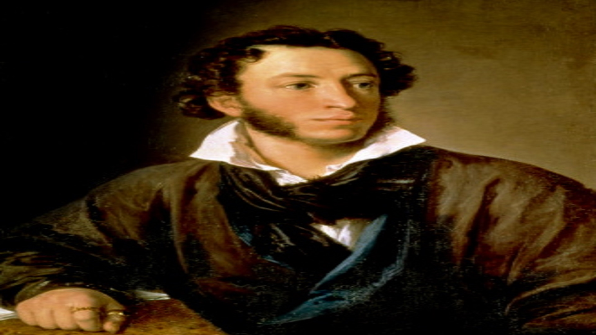
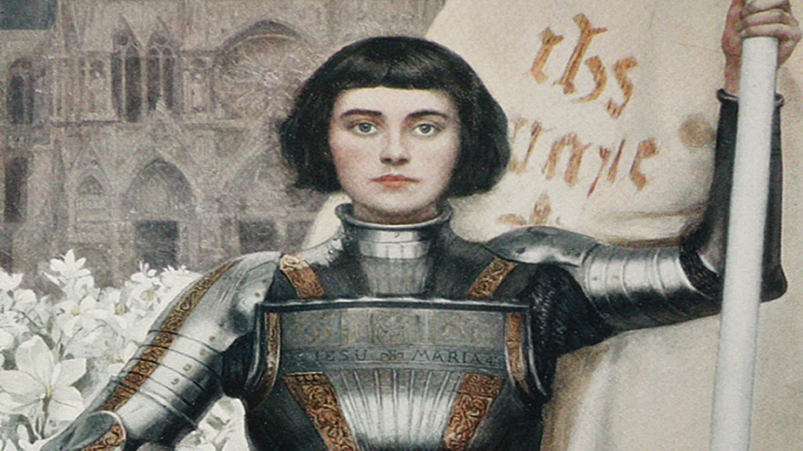

- Пушкин, Александр Сергеевич Материал из Википедии — свободной энциклопедии Перейти к навигацииПерейти к поиску Запросы «Пушкин» и «Пушкин, Александр» перенаправляются сюда; см. также другие значения терминов Пушкин и Пушкин, Александр. Александр Сергеевич Пушкин Portrait of Alexander Pushkin (Orest Kiprensky, 1827).PNG Александр Пушкин, портрет работы О. А. Кипренского. Пушкин: «Себя как в зеркале я вижу, но это зеркало мне льстит» Имя при рождении Александр Сергеевич Пушкин Псевдонимы Александр НКШП, Иван Петрович Белкин, Феофилакт Косичкин (журнальный)[1], P., Ст. Арз. (Старый Арзамасец), А. Б. Дата рождения 6 июня 1799[2] Место рождения Москва, Российская Империя[4][5] Дата смерти 10 февраля 1837[2] (37 лет) Место смерти Санкт-Петербург, Российская Империя[4][6][7] Гражданство (подданство) Flag of Russia.svg Российская Империя Род деятельности поэт, прозаик, драматург, литературный критик, переводчик, публицист, историк Годы творчества 1814—1837 Направление романтизм, реализм Жанр поэзия, проза, пьеса, критика, публицистика, история, перевод Язык произведений русский, французский[3] Дебют К другу стихотворцу (1814) Подпись Подпись Произведения на сайте Lib.ru Логотип Викитеки Произведения в Викитеке Commons-logo.svg Файлы на Викискладе Логотип Викицитатника Цитаты в Викицитатнике Алекса́ндр Серге́евич Пу́шкин (26 мая [6 июня] 1799, Москва — 29 января [10 февраля] 1837, Санкт-Петербург) — русский поэт, драматург и прозаик, заложивший основы русского реалистического направления[8], критик и теоретик литературы, историк, публицист; один из самых авторитетных литературных деятелей первой трети XIX века. Ещё при жизни Пушкина сложилась его репутация величайшего национального русского поэта[9][10]. Пушкин рассматривается как основоположник современного русского литературного языка
- UberMarginal, или Как американский студент из России популяризирует философию в интернете Анатолий МИЦЕНГЕНДЛЕР, или UberMarginal — американец российского происхождения. В США он переехал в нулевых годах, получил философское образование в Калифорнийском университете (UCLA). С 2012 года Анатолий ведет свой канал на Youtube, где рассказывает о философии и лингвистике, отвечает на вопросы слушателей, читает небольшие лекции. Сейчас у его канала 33 тысячи подписчиков, многие из них студенты. Как можно заинтересовать молодежь философией, разбирался корреспондент «P.S. — 5 сов».
- Жанна д’Арк Материал из Википедии — свободной энциклопедии Перейти к навигацииПерейти к поиску У этого термина существуют и другие значения, см. Жанна д’Арк (значения). См. также: Легендарные и альтернативные версии судьбы Жанны д’Арк Жанна д’Арк фр. Jeanne d'Arc Joan of Arc miniature graded.jpg Жанна д'Арк. Миниатюра второй половины XV в. Рождение 6 января 1412 Домреми Смерть 30 мая 1431 (19 лет) Руан Почитается в католицизме Беатифицирован 18 апреля 1909 в соборе Парижской Богоматери Канонизирован 16 мая 1920 в соборе Святого Петра В лике блаженный, досточтимый и католический святой[d] День памяти 30 мая Покровитель Франции Награды Godfather promotion of Special Military School of Saint-Cyr[d] Логотип Викитеки Жанна д’Арк в Викитеке Commons-logo.svg Категория на Викискладе Жа́нна д’Арк, Орлеанская дева (совр. фр. Jeanne d'Arc[1]; 6 января 1412 — 30 мая 1431) — национальная героиня Франции, одна из командующих французскими войсками в Столетней войне. Попав в плен к бургундцам, была передана англичанам, осуждена как еретичка и сожжена на костре. Впоследствии в 1456 году была реабилитирована и в 1920 году канонизирована — причислена католической церковью к лику святых.
- Кодзима, Хидэо Материал из Википедии — свободной энциклопедии Перейти к навигацииПерейти к поиску Хидэо Кодзима 小島 秀夫 Кодзима на Japan Expo 2010[en] Кодзима на Japan Expo 2010[en] Дата рождения 24 августа 1963 (55 лет) Место рождения Сэтагая, Токио Страна Flag of Japan.svg Япония Род деятельности геймдизайнер Автограф Hideo Kojima Signature.png Сайт kojimaproductions.jp Commons-logo.svg Хидэо Кодзима на Викискладе В Википедии есть статьи о других людях с фамилией Кодзима. Хидэо Кодзима (яп. 小島 秀夫 Кодзима Хидэо, 24 августа 1963, Токио) — японский геймдизайнер, сценарист и продюсер разработки компьютерных игр. Глава собственной студии по разработке компьютерных игр Kojima Productions, в прошлом — вице-президент Konami Digital Entertainment[1][2]. Кодзима наиболее известен как создатель серии игр Metal Gear, а также квестов Snatcher и Policenauts. Он также выступал продюсером других игр и серий, в том числе Zone of the Enders, Boktai и Castlevania: Lords of Shadow.
- Cookiezi (или Shigetora) - игрок в osu!. Один из лучших игроков. Он первый в мире достиг отметку в 14k pp. Так же он первый достиг отметку в 820pp за 1 скор на карте FREEDOM DiVE [FOUR DIMESNIOS] с HardRocko'ом и Hidden'ом. Помимо osu! он играет в League of Legend и StarCraft. Родился Shigetora в Южной Кореи, но перебрался в Японию и по сей день там живет. В osu!
- Иисус Христос Материал из Википедии — свободной энциклопедии Перейти к навигацииПерейти к поиску У этого термина существуют и другие значения, см. Иисус Христос (значения). Иису́с др.-евр. ישוע — «Йешу́а» Spas vsederzhitel sinay.jpg Христос Пантократор (одна из древнейших икон Христа, VI век, монастырь Святой Екатерины) Пол мужской Период жизни 1 год до н. э. — 33 год (традиционная датировка) Толкование имени «Яхве спасает» Имя на других языках греч. Ἰησοῦς лат. Iesus церк.-слав. і҆и҃съ В иных культурах Иса Местность Назарет, Капернаум, Галилея Занятие плотничество (Мк. 6:3), проповедование (Мф. 4:17), целительство (Мф. 4:23), искупление (Мф. 20:28) (во время земной жизни) Происхождение из колена Иудина (по плоти) Упоминания Новый Завет Отец Бог Отец[1], Иосиф Обручник (приёмный отец)[2] Мать Мария Супруг(а) неизвестно Дети неизвестно Место погребения Гроб Господень, Иерусалим День памяти Господские праздники Логотип Викицитатника Цитаты в Викицитатнике Commons-logo.svg Файлы на Викискладе Христианство Christian cross.svg Библия Ветхий Завет Новый Завет Евангелие Десять заповедей Нагорная проповедь Апокрифы Троица Бог Отец Иисус Христос Святой Дух История христианства Апостолы Хронология христианства Раннее христианство Гностическое христианство Вселенские соборы Великий раскол Крестовые походы Реформация Народное христианство Христианское богословие Сотворение мира Грехопадение Грех Ипостасный союз Искупительная жертва Христология Спасение Благодать Церковь Добродетели Эсхатология Христианское богослужение Евхаристия Духовенство Типикон Направления в христианстве Православие Католицизм Протестантизм Древние восточные церкви Антитринитаризм Численность христиан Христианство по странам Критика христианства Критика Библии Возможные источники текста Библии Портал:Христианство Запрос «Иисус» перенаправляется сюда; см. также другие значения. См. также: Христос, Иса ибн Марьям и Исторический Иисус Иису́с Христо́с (др.-греч. Ἰησοῦς Χριστός; церк.-слав. і҆и҃съ хрⷭ҇то́съ), или Иисус из Назарета — в христианстве центральная личность и предсказанный в Ветхом Завете Мессия, ставший искупительной жертвой за грехи людей. Основными источниками информации о жизни и учении Иисуса Христа являются Евангелия и другие книги Нового Завета. Сохранились свидетельства о нём и у нехристианских авторов I—II веков (см. Историчность Иисуса Христа). Согласно христианскому Никео-Цареградскому Символу веры, Христос является Сыном Божьим, единосущным (то есть, одной природы) с Отцом, Богом, воплощённым в человеческой плоти. Согласно Афанасьевскому Символу веры, Иисус Христос является вторым лицом (ипостасью) Троицы. Догмат о Троице принят большинством христианских конфессий, за исключением некоторых групп и направлений с антитринитарным учением. В Никео-Цареградском Символе веры утверждается, что Христос умер ради искупления человеческих грехов, а затем воскрес из мёртвых, вознёсся на небеса и придёт второй раз, чтобы судить живых и мёртвых. Другие христианские убеждения включают непорочное зачатие Иисуса, творение чудес и пр. Личность Христа вызывает большое количество споров как на академическом, так и на бытовом уровнях. Дискуссии ведутся относительно самого факта существования Иисуса, хронологии его жизни, его социального положения и культурной среды, проповедуемых им идей и их значения для человечества. Теологи выдвигают конкурирующие (или дополняющие друг друга) описания Иисуса как ожидаемого Мессии, как лидера апокалипсического движения, как странствующего мудреца, как харизматического целителя и как основателя независимого религиозного движения. Ортодоксальный иудаизм не признаёт Иисуса ни Пророком, ни Мессией. Согласно исламу, Иисус является одним из посланников Аллаха (расуль), принёсшим Инджиль (Евангелие), и чудотворцем. Иисус называется также «Мессией» (Масих, араб.)[3], но не считается сыном Бога. Ислам учит, что Иисус живым вознёсся на небо, отвергая христианское учение о распятии и воскресении Иисуса Христа. Религиоведы и теологи, придерживающиеся точки зрения, что Иисус является реальной исторической личностью, а не мифом, утверждают, что он родился в период приблизительно с 12 года до н. э. по 4 год до н. э.[4] — умер в период с 26 по 36 год[5].
- Мэддисон, Илья Материал из Википедии — свободной энциклопедии Текущая версия страницы пока не проверялась опытными участниками и может значительно отличаться от версии, проверенной 25 ноября 2018; проверки требуют 4 правки. Перейти к навигацииПерейти к поиску В Википедии есть статьи о других людях с фамилией Мэддисон. В Википедии есть статьи о других людях с фамилией Давыдов. Maddyson Личные данные Имя при рождении Илья Сергеевич Давыдов Дата рождения 8 марта 1988 (30 лет) Место рождения Рига, Латвийская ССР, СССР, Латвийская ССР, СССР или СССР Род деятельности видеоблогер, Стример, ютубер Псевдоним(ы) Maddyson Рост 178 см[источник не указан 52 дня] Веб-сайт twitch.tv/honeymad YouTube Канал Maddyblog Создатель Илья Мэддисон Годы активности 2008 — наст. время Жанр видео игровые стримы, игровые обзоры Подписчики 743,9 тыс. (ноябрь 2018) Просмотры 82 млн (ноябрь 2018) Кнопки YouTube Silver Play Button 2.svg 100 000 подписчиков 2012 Илья Мэддисон (англ. Maddyson, настоящее имя Илья Сергеевич Давыдов)[1][2][3][4] — российский видеоблогер. В 2008—2011 годы вёл видеоблог на Rutube, в 2011—2015 и 2018 на YouTube и в 2013—наст. время — трансляции на Twitch. Одним из первых в России делал юмористические видеообзоры роликов, фильмов и компьютерных игр. Стал известен благодаря обзорам видеоигр. Среди пользователей интернета имеет прозвища «король рунета»[5], «король игровых обзоров»[6][7]. По мнению «Московского комсомольца», является первопроходцем русского видеоблогинга[8], Lenta.ru называет его «культовым обзорщиком компьютерных игр»[5] и «основателем российского видеоблогинга»[9]. «Газета.Ru» называет его первым популярным летсплеером в России[10
- Хоро (яп. ホロ Хоро) —[4][5] волчица, божество урожая родом из северных земель, которые называются Йойс. Она заключила договор с жителями городка и деревни Пасро, пообещав обеспечивать хороший урожай пшеницы каждый год. Но время шло и жители города и деревни стали всё меньше верить в Холо, и уже не надеялись на неё, как когда-то. По этой причине Холо решила покинуть деревню, спрятавшись в пшенице, в телеге странствующего торговца Лоуренса, и вернуться на север, в то место, где она родилась, и которое считает своим домом. Холо путешествует вместе с Лоуренсом из города в город, попутно помогая своему спутнику решать различные проблемы. Хотя иногда порой она и является их причиной. Холо принимает форму юной девушки с волчьими ушками и длинным пушистым хвостом. Также она может принимать свою истинную форму — огромной волчицы, наводящей страх на людей. Чтобы изменить форму, ей нужно либо выпить немного крови, либо съесть зёрна пшеницы. Представилась как «Холо Мудрая Волчица из Ёицу». Способна хорошо отличать правду от лжи. Практически всё время Холо была одинока, поэтому иногда она показывает хрупкую сторону своей души. Холо полагается на Лоуренса, поскольку боится одиночества, что Лоуренс очень хорошо понимает, будучи странствующим торговцем, и по-своему старается поддерживать и утешать её. Также Холо хорошо осознает и боится такой огромной разницы в продолжительности их жизней. Для неё человеческая жизнь словно мгновение. Холо довольно сильно боится снова остаться в одиночестве, хоть и скрывает это за своими шутками. Но несмотря на то, что поначалу она шутит о своей привязанности и чувствах к Лоуренсу, она медленно, но верно влюбляется в него. Со временем она также начинает испытывать к Лоуренсу глубокие чувства. Она обожает вкусную еду и алкоголь, сладкое, но особенно любит яблоки. Холо гордится своим хвостом и постоянно проявляет особую заботу о нём: расчёсывает, гладит, поддерживает в ухоженном состоянии.